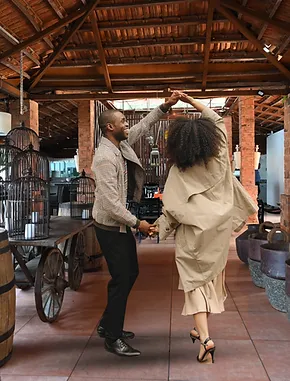
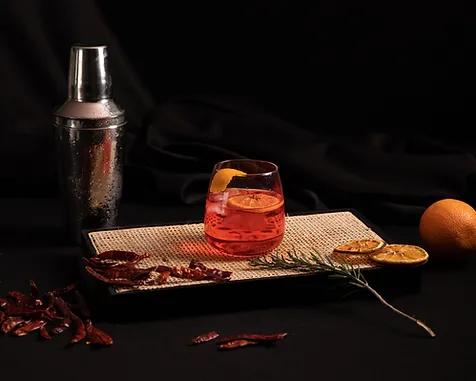

All aboutus Us🡮




Super tasty
I visited the restaurant today and would like to say it was a fantastic experience. A real treat from entering the building to leaving. The staff were excellent, and how lovely to see such a young team behave in such a professional yet friendly manner. The food was delicious and I had a very special experience. Thankyou
Super tasty
I visited the restaurant today and would like to say it was a fantastic experience. A real treat from entering the building to leaving. The staff were excellent, and how lovely to see such a young team behave in such a professional yet friendly manner. The food was delicious and I had a very special experience. Thankyou